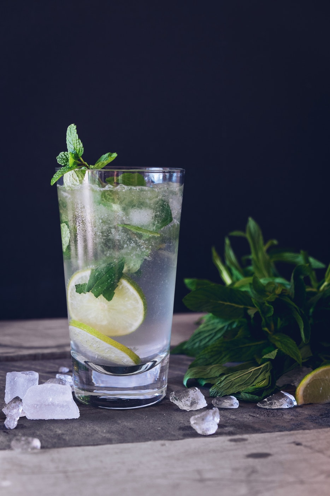
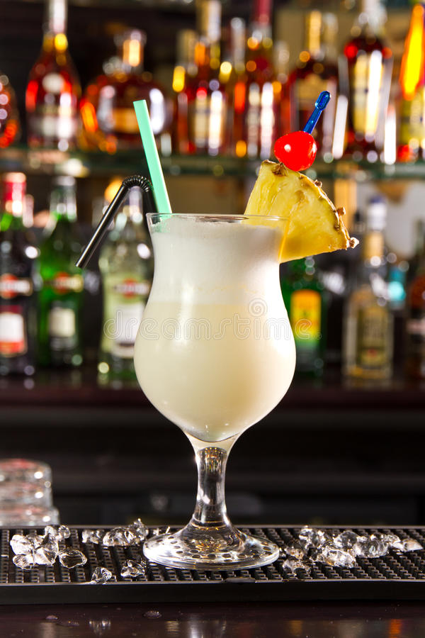
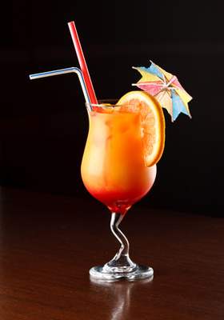

Carine Le Charlès
Student at Le Wagon
In 2014, I graduated with an engineering degree. I was Quality Assurance manager in the Internet of Things sector in Bordeaux since 2015. I would like to deepen my technical skills and can be autonomous on digital projects.
My favorite cocktails
|  |
MojitoThe Mojito was born in Cuba in the early twentieth century, and has become a "national cocktail of Cuba". Made famous by the writer Ernest Hemingway who loved drinking, the mojito is made with rum, lime and mint. |
|  |
Pina coladaThe origin of the Piña Colada remains rather vague, and it is not known exactly who invented this exotic drink. Even the recipe varies from one bar to another and from one country to another! Result: some forget the pineapple juice. When we know that 'piña colada' means 'pineapple pressed' in Spanish, we say that it is a shame, no? (you have to know how to rebel sometimes). |
|  |
Tequila sunriseIt has the color of the islands, and recalls the color chart of the tubes of the summer. The legend says that it was a bartender in Arizona who had the idea in the 30s. It met the desire of an amateur customer Tequila, who wanted nothing more than a good cocktail to enjoy by the pool ... |
About this page
This page has been coded during the FullStack program @LeWagon. That was probably the best experience of my entire life.